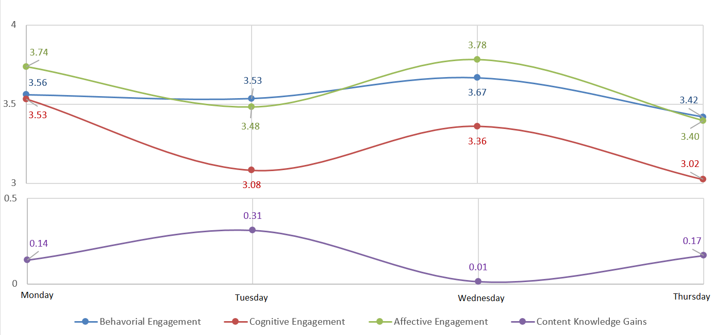

a high mountain loamy-skeletal, micaceous Typic Humicryepts
Why the ePortfolio?
This website is an example of an electronic Portfolio (ePortfolio) that's been miniaturized to focus on a single soil series. The original idea here was to offer students in ENSC245 a unique alternative to the semester's cumulative assignment, FSR3. In years past, FSR3 has been a more traditional report/oral presentation style assignment, and we are hoping to change that. Essays and reports are great and all, but as a way of assessing what a student knows, they are as ancient as learning technology gets. Actually, essays aren't that great at all. For centuries, teachers have assigned essays for students, so while these kinds of assignments might be regarded as tried-and-true in the historical canon of education, the structure and process of essay writing really only caters to a small section of the learning styles that are out there.
It is 2016 after all, so let's get with the program.
In the last couple of decades, educators have become more aware of the need to assess and encourage different learning styles. High impact practices(HIPs) are considered one of the keys to improving learning outcomes, increasing engagement, and closing the achievement gap in higher education.
Electronic Portfolios (ePortfolios) are online records of learning. They are considered an effective way to assess students' experiences with HIPs, and, in the case of reflective ePortfolios, they are regarded as a HIP in their own right .
Digital storytelling is all about creating a narrative out of information, and then compiling it in a modern format. This could include music videos, animations, podcasts, or infographics – really anything that goes beyond a wall of text. As an educational tool, digital storytelling offers students the chance to be creative and to use different expressive mediums, but it can be difficult to assess more subjective measures of success.
The utility of ePortfolios for exercising employable skills (like web design and digital communication fluency), and encouraging critical thinking have been demonstrated, but ePortfolios have only rarely been used to expand on digital storytelling. We hope that having students share their digital stories in an ePortfolio will result in a better educational experience for the student and a more holistic and robust means for the instructor to assess those educational experiences.
Here is the text of a proposal I completed recently about this project.Towards better tech in the classroom.
The crux of digital storytelling, I think, is how to toe that line between being palatable and being informative. For the most part, I think these two are inversely correlated, that is, the more information that is packed into a minimally viable product, the less appealing it is from a consumer standpoint. While you could argue that creating compelling digital media is more art than science, we researchers still try to quantify what exactly it is that makes something work, and the question I really want to get at, is how can you optimize this relationship?
Educators have a small advantage in the attention economy, in that they have a relatively captive audience (though some argue the attention economy is collapsing, it's still a viable model for explaining the ongoing negotiation of student interest and engagement with digital products). But, educators often miss the mark with technology. If we really want to optimize technology in the classroom, which implies that we have to get smarter about not just what we teach, but how we teach it.
Going back to the relationship between information and appeal, we should be able to measure each of these attributes. In a digital learning environment, content knowledge is a good metric for what information was obtained by the pupils, and it's a relatively easy thing to measure. Appeal is a more subjective quality, but web analytics can give a good approximation on of engagement. Preliminary data from Obery, et. al., has shown what I suggested earlier, that engagement and content knowledge are inversely correlated, but the problem is, this completely goes against everything conventional wisdom of teaching! What this suggests is that by creating more exciting, engaging content, you are reducing student learning outcomes.
Clearly there is more complexity to this relationship. Compounding variables, which I envision as having a phase shift effect on the knowledge/engagement relationship, such as production value, transparency, and recursive fatigue, are numerous and their impacts difficult to tease out. Nevertheless, I don't think this is a call to abandon all hope of creating better teaching content. Rather, I return to the question of optimization. With limited resources, how can we as educators maximize our ROI on technology implementation?
Answering this question is the whole idea behind this shot at using digital storytelling and ePortfolios. Is this practice a panacea? Likely not, but not more tools we have, and the better we understand them, the better job we can do at teaching. We want to take the same approach that we take in the lab to the classroom, something like data-driven teaching.
Self evaluation.
Reflective practice is an important part of the experiential education process. Seems to me like a good topic for a blog post.
Reflecting back on our soils song, I'm most immediately aware of a lack of informative content or narrative structure. As song writers, we were most concerned with finding lyrics that fit with the rhythm of the song, and as a result, our final product is easily digestible but relatively superficial.
In blog post 2 I went on about the difference between educational value and entertainment value, and if we were to do this song over a bit more, I'd like to think of ways to bump up the amount of information contained in the song, while maintaining or increasing the entertainment value. But how could this happen?
Looking at successful examples (like this one, or this one) of digital storytelling, the first thing that jumps out at me is production value. The first of these videos is more formal in style than the second, but they are both undeniably slick. As amateur content producers, even our best efforts at doing a music video wouldn't git anywhere near these examples, but our performance could easily have been better rehearsed.